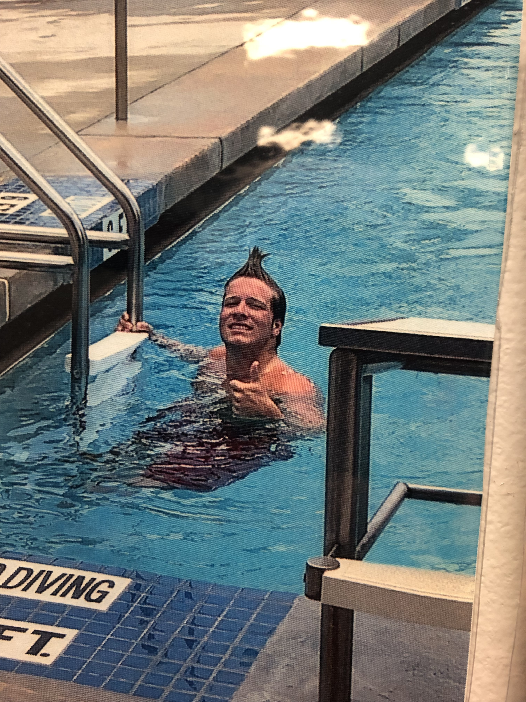

Julian Jordan
About
My name is Julian, I am a senior at Florida State University pursuing a Bachelors of Science in Computer Science and Applied Mathematics. Starting in Fall of 2025, I will be pursuing a Masters of Engineering in Computer Engineering at the University of Cincinnati, where I plan to further my education in developing embedded systems, computer architecture, and machine learning.
Work Experience
Listed below is my past and current work experience:
- Head Lifeguard for the City of Tallahassee: I lead a team of up to 13 lifeguards to ensure the facility operates safely and programs and operations function as expected
- Mentor for Women in Computer Science at FSU: I mentor undergraduate Computer Science students through peer to peer connection and development and presentation of technical workshops
My current and past projects are detailed below
Projects
Ensemble Kalman Filter
October 2024 - Present
Through the Directed Reading Program at the Math Department at FSU I am studying the ensemble kalman filter, an advanced data assimilation algorithm. The ensemble kalman filter is an iterative algorithm that aims to predict the state of some system given observations. As the system advances in time, the model gives less weight to new observations overcoming noise.
Skills Involved
- Python Programming: Utilized python to program algorithms and visualize data assimilation results.
- Mathematical Applications: Applied advanced math concepts from the fields of linear algebra, statistics, and differential equations to understand and apply Kalman Filter algorithms.
- Literature Review: Dissected mathematical research papers to understand Kalman Filter algorithms and contemporary applications.
Progress
- Completed programming the Kalman Filter (an older slightly simpler algorithm) in python based on a pendulum system with synthetic observations.
- Completed literature review of the Ensemble Kalman Filter to gain understanding of the algorithm.
Current Goals
- Programming the full Ensemble Kalman Filter algorithm in python.
- Apply the Ensemble Kalman Filter to relevant atmospheric data to make predictions.
- Present findings at an FSU graduate poster session in April.
GAMEIQ
January 2025 - Present
Developed with the Seminole Innovators at FSU, GAMEIQ is an application that utilizes a machine learning model to project the best next play of a football game in real time.
Skills Involved
- Machine Learning: Developed a machine learning model in Tensorflow which learned from years of play by play data.
- Programming: Programmed the model and application backend in Python
Chess Rougelite
January 2025 - Present
Developed as a senior capstone project, Chess Rougelite is a single player game where players must face a series of chess AI in increasing difficulty. Between matches, players have the opportunity to give themselves advantages against future opponents that even world class chess players might not be able to defeat.
Skills Involved
- Programming: Programmed in python utilizing the gamepy library.
- Object Oriented Design: Utilized a class structure to program the chess engine.
- Machine Learning: Utilized machine learning algorithms to develop chess bots.
Contact Information
contact information here